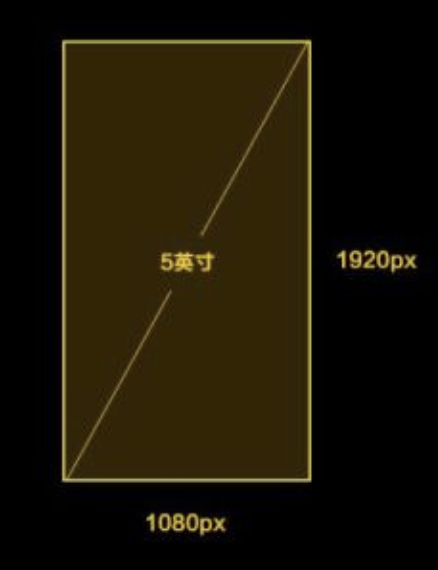
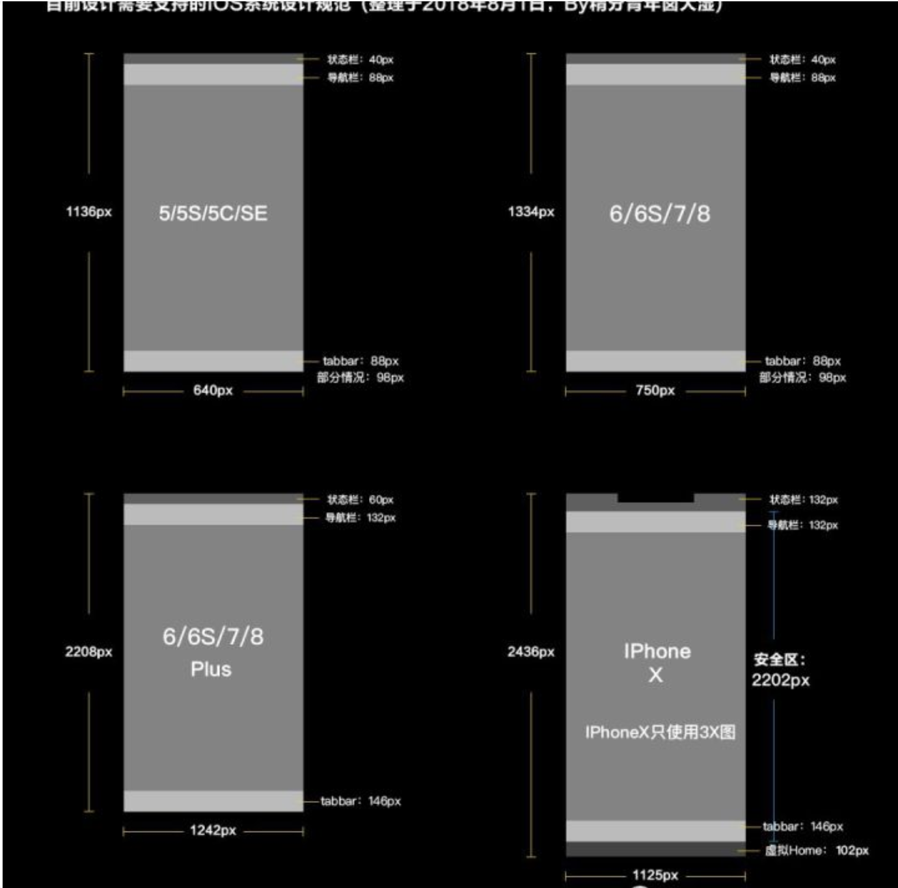
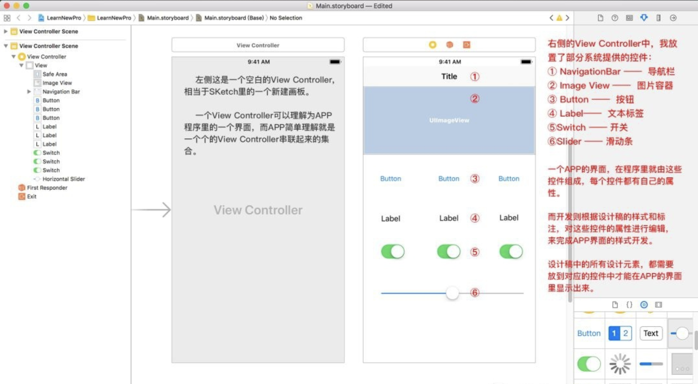
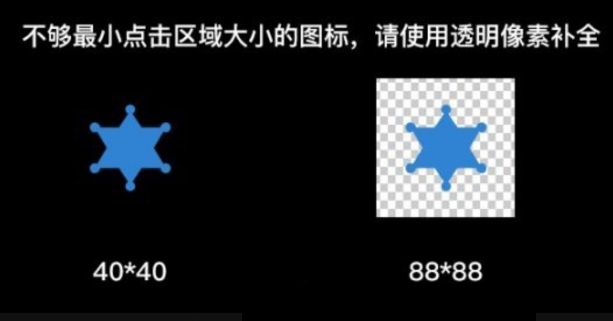
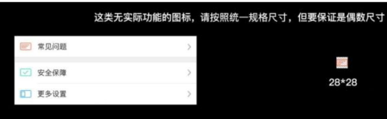
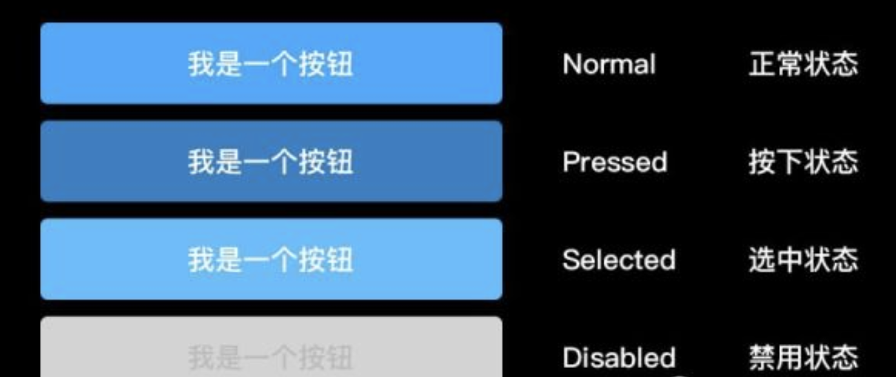
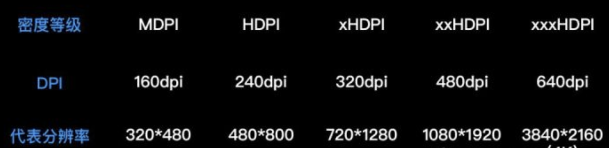
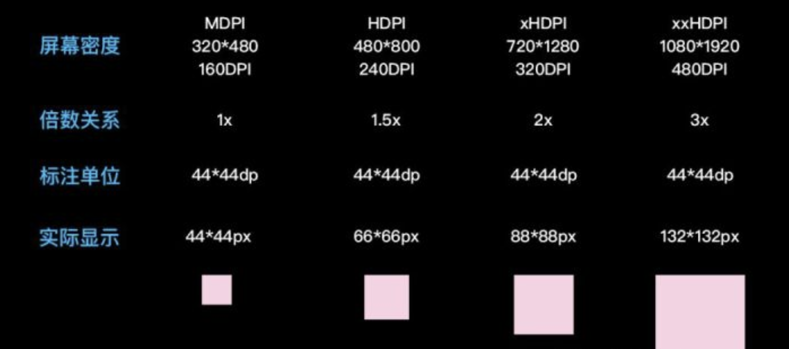

【原创】作者：吴朝丽
设计工具
sketch
精不精通Sketch，主要看插件，推荐个网站：http://sketch.cm/。可搜插件、找素材；Sketch是OS X平台独占，需要下载Sketch可以到这个网站去下载。推荐个Mac平台应用的下载网站：http://xclient.info/ ；软件本身已经提供了大量的IOS和Android系统设计资源，配合各类插件。
Photoshop
不轻量，在UI设计上略逊一筹。不过因为Sketch是OS X独占，所以因为平台限制的原因，用PS设计也没有问题。
Adobe XD
全称为Adobe Experience Design；这是一款集原型、设计和交互于一体的小清新时代风格的设计软件。Adobe XD将会是Skech的劲敌。然而在windows系统当中，Adobe XD是产品原型设计领域最顺手的设计软件。它使用简单，界面整洁，Adobe XD在界面、素材以及设计操作上的确甩了Axure好几条街。
做好版本管理、文件归档的工作
专业水平不仅体现在设计能力之上，优秀的管理能力也是重要的职业素养。合理规划好设计版本，进行明确的文件归档工作，有助于提高设计师的工作效率。目标：清晰高效。
关于手机的基础概念
手机分辨率
手机屏幕的像素点数。比如7501334、7201280等等，细分还有物理分辨率和逻辑分辨率……
手机分辨率牵扯到的就是工作时设计稿的尺寸，只要记住设计尺寸就可以了。
屏幕尺寸
手机对角线的物理尺寸，单位是英寸。IPhone 6/7/8的尺寸就是4.7英寸……
屏幕尺寸和设计其实关系不大，主要是用来计算屏幕密度的。
屏幕密度(DPI或PPI)
每英寸的像素点数。简单理解就是屏幕密度越大，画面越逼真细腻。
下面是屏幕密度的计算方法
范例是5英寸，分辨率为1920*1080的手机：
屏幕密度计算公式：√宽²+高²/屏幕尺寸
√1080²+1920²/屏幕尺寸≈440dpi/ppi

屏幕密度牵扯最多的是安卓系统，安卓手机屏幕本身的密度种类非常多，这也是导致了安卓系统需要提供多套切图的原因。
(使用SVG格式图片可以解决多套切图和适配的问题，这个我们下面会提到)
基础设计规范—IOS系统
苹果的开发者官网：https://developer.apple.com/ ，比其他途径获得的资料更加全面和权威。
最新系统版本：IOS 11.4.1（2018.8.1）
中文字体：苹方黑体
英文字体：San Francisco
官方系统设计模板下载：https://developer.apple.com/design/resources/
官方系统设计字体下载：https://developer.apple.com/fonts/
下图是截止到目前，可能还需要支持的机型和对应的设计尺寸

设计稿尺寸
通过上面的分析，在xHDPI这个密度等级下，倍数关系为2，推荐使用720*1280尺寸做设计稿，换算方便，适配容易。不过目前的现状是，如果公司的产品有IOS和Android两个版本，基本上设计师只会做IOS的版本，然后套用给Android，这样做也是可以的。两者的切图，在这个设计尺寸之下是可以通用的。
Sketch设计
使用375 * 667尺寸即可，开发在Xcode里也是使用这个尺寸。导出的@2x图适配IPhone 5/5S/5C/SE 6/6S/7/8。导出的@3x图适配Iphone 6/6S/7/8 Plus IPhone X。
Photoshop设计
画布就建成750 * 1334尺寸的即可，在这个前提之下，导出原尺寸图片加后缀@2x，适配IPhone 5/5S/5C/SE 6/6S/7/8导出1.5倍图片加后缀@3x，适配IPhone 6/6S/7/8 Plus IPhone X。
常用数据
下面的内容苹果官方提供的模板文档其实都有对应的数据，可以去官网下载。字号使用建议(这个不是硬性规定，根据视觉效果酌情使用)
导航文字 34-38px
标题文字 28-34px
正文文字 26-30px
辅助文字 20-24px
Tab bar文字 20px
图标尺寸建议
PP应用图标，建议使用10241024尺寸去做，逐级缩小去应用到各种场景中。SKetch已经提供了IOS和Android系统的APP尺寸图标模板，直接使用就可以了。
界面适配
程序内部的功能界面：这种界面通过写成自适应的界面可以很好的适配各种机型；如果有特殊的布局要求，也可以让开发根据特定机型去调整，不需要单独为各类机型再做设计稿。
覆盖全屏类的界面：比如闪屏、启动页、引导界面、插画页面等，这类覆盖全屏的界面必须要单独为IPhone X的比例重新绘制或者调整设计稿。
其他的IPhone机型，遇到这种界面，整体放大缩小、微调之后按照各机型的设计尺寸输出对应的切图就可以了。
IPhone X的安全区域：IPhone X的安全区域就是扣除顶部刘海状态栏和底部虚拟home键之后，中间的内容显示区域。如果你不得不使用IPhoneX的尺寸做设计稿，请一定设置好参考线，不要把内容做进这两块区域内部。
IPhone X规范：iPhone X 人机交互指南及其设计细节。
简单理解APP构成
下图是IOS开发工具Xcode里的一个空白页面，图片的文字标注请仔细阅读。本质上，开发写APP界面和设计做设计稿是一样的，只不过两者实现方法不同。

设计稿的标注
根据上图我们可以理解设计稿和程序之间的关系：设计稿里的按钮、文字、图标、列表、背景色、线条等等所有的设计元素，在Xcode里都有对应的控件，设计元素必须使用对应控件，才能在APP的界面里显示出来。
设计稿的标注，实质上是标注的各类控件的属性以及相对于其他控件的关系：
文字的自身属性：颜色、字号、字体、行间距、对齐方式、透明度；
图片的自身属性：宽高、间距、距离、透明度。
至于标注在上篇文章有详解：一款APP从设计到切图标注适配全记录，这里就不累赘了！
程序的对应控件
Label的自身属性：颜色、字号、字体、行间距、对齐方式、透明度；
Image View的自身属性：宽高、间距、距离、透明度。
实际上各类控件的属性也要比这个复杂的多，这里是最简单理解的举例说明。
如今使用本地化插件Sketch Measure，几乎不用手工标注，标注导出HTML后，扔给开发，他们想看什么属性自己点击查看就是了，所以我们这里了解下标注原理就行。
而一些线上工具的插件，比如蓝湖、墨刀、Mockplus等等，功能更加丰富，各位根据自身情况灵活运用吧。
Sketch Measure去http://Sketch.im下载
设计稿的切图
IOS目前常用的还是输出2套PNG图片。@2x、@3x的后缀，是为了在Xcode导入图片资源时，识别对应机型所用的图片。
Xcode里提供了相应的位置，相同命名图片会根据后缀填入到对应的位置。
目前Sketch提供了PNG、JPG、TIFF、WebP、PDF、EPS、SVG格式。
但是对于UI设计来说，常用的图片格式就以下几种：
PNG 常用图片格式，没什么解释的，目前大部分产品还在使用此格式；
WebP 安卓的图片格式，同等质量图片下体积非常小，非常推荐给安卓使用；
SVG 矢量格式，完美解决适配问题，但也有部分缺点。想具体了解WebP和SVG，可以查看之前的文章。
切图输出规范
前提：同一类型、位置的切图，请保证切图尺寸、规格一致，图片尺寸为偶数大小。
1.有操作功能、可点击的功能性切图：最小点击区域问题
苹果官方提供的能准确点击的最小点击区域：88 * 88px;
小于这个范围也可以点击，但是点击不灵敏，体验较差。
对于比这个范围小的可点击按钮，周围需要用透明区域填充后再输出切图。

解释下为什么用透明区域填充来扩大点击区域范围：图标这东西，对设计师来说没区别，都是图片。但对开发来说，可操作和不可操作的图标是两种类型的控件，图标的样式不过是传给该控件的显示图片罢了。可操作的功能图标在Xcode对应控件是UIButton。对控件来说，如果不在代码里明确固定控件的大小、点击区域等等各类属性，设计师传给我多大的图，这个控件就会被这张图撑到多大。
你给我一张4040的按钮切图，如果开发什么都不做，那这个UIButton在手机界面里就被撑到4040的大小。我也可以在Xcode里写几行代码，固定图片的大小就是4040，扩大UIButton这个控件的大小变成8888，这样这个控件的点击区域也扩大了。但是一张规范的切图就能解决的事情，为什么还要在代码里再手动加几行呢？
一个可点击按钮需要加一行代码，整个APP就可能多加上百行上千行的代码。规范的切图也是可以提升产品开发效率的。
2.非功能性切图，比如列表图标、说明图标等，按统一规格的最小尺寸切。
这么切还可以减少一些程序因图片资源大小导致的体积大小问题。

这类切图，对应的是UIImageView控件，就是一张图片，无操作，只是占位和显示。所以你按照相同规格，最小尺寸切就可以了。
问：一定要切正方形的吗？如果图标都是3020的，那我统一切3020的行不行
答案是：可以，这个没有完全的硬性规定。虽然我是设计师，但也会去写一些IOS程序。正方形规格切图就是为了方便开发，当然还是推荐你使用正方形规格来切图。但实际开发过程中，只要保证同一位置，切图规格统一就可以。
切图输出状态：
同一按钮、元素的不同状态，要明确命名对应状态之后，分别输出对应图片。
下图示例按钮的选中状态多出现在游戏APP中，这里仅表示说明

命名规范
不要使用中文、特殊字符，请使用英文、下划线、数字对切图命名，数字不要打头。
命名方式尽量清晰，推荐采用：种类_位置_功能_状态
示例说明：btn_homepage_seach_normal@2x.png
开发看到就会明白：这是位于首页，处于正常状态的搜索按钮2倍切图。
基础设计规范——Android系统
这是Android Material Design中文版的地址mdui.org/design/
Android的英文版地址material.io/
最新系统版本：Android 9.0（2018.8.1）
中文字体：**思源黑体 / **英文字体：Robot
Android不整理各类机型的尺寸规范了，数据零散，难以整理。所以我们从屏幕密度这里理解设计规范就可以了。
Android手机屏幕密度
上文我们提过屏幕密度的计算方式，安卓手机因为各种屏幕尺寸和分辨率，导致如果单纯按照数值计算，可能屏幕密度种类会多到让设计师崩溃。所以为了解决这个问题，安卓手机出厂时，屏幕有自己初始的固定密度，系统会根据这些屏幕密度自行适配，下图是对应的屏幕密度表：

Android的开发单位以及设计尺寸
正因为Android手机分辨率多样，为了保证同一设计在不同屏幕密度的手机上显示效果一致，Android系统使用了下面两个单位：
dp：android开发单位，相当于比例换算单位。使用该单位，可以保证控件在不同密度的屏幕上按照比例解析显示成相同视觉效果；
sp：android开发文字单位，和dp类似，也是为了保证文字在不同密度的屏幕上显示相同的效果。
当屏幕密度为MDPI（160DPI）时，1dp=1px
当屏幕密度为MDPI（160DPI）时，1sp=1px
按照上面两个公式的换算，同样dp大小的图片在不同屏幕密度的手机上如下图所示，
基本可以保证图片显示效果在各类手机上相同。

设计稿尺寸
通过上面的分析，在xHDPI这个密度等级下，倍数关系为2，推荐使用720*1280尺寸做设计稿，换算方便，适配容易。不过目前的现状是，如果公司的产品有IOS和Android两个版本，基本上设计师只会做IOS的版本，然后套用给Android，这样做也是可以的。两者的切图，在这个设计尺寸之下是可以通用的。
设计稿的标注
推荐使用dp和sp进行标注。但是呢，如果你用720*1280做设计，使用像素单位标注，现在也不会影响什么。
设计稿的切图
理论上，对于Android系统来说，如果你想完美适配各种机型，应该为不同的屏幕密度提供不同尺寸大小的切图，而Android的开发工具也为不同的屏幕密度提供了对应的资源文件夹。但实际上，并不需要提供上面密度表那么多套的切图，程序安装包的大小基本就是由于图片占用了太多的位置。所以需要提供多少套图片，请和公司的开发沟通，确定你们的产品实际支持哪些屏幕密度。
图片格式
WebP和SVG：推荐Android系统使用WebP格式，体积小，显示效果好；而SVG这种矢量图片格式完美解决了Android多套切图的问题，一套切图，完美适配各种屏幕密度。
最小可点击区域
48dp：这和IOS的最小点击区域性质是一样的，都是考虑到手指点击的灵敏性的问题，设计可点击控件的时候要考虑到这一点。更多的注意事项和IOS切图是相同的。


{kind=link}